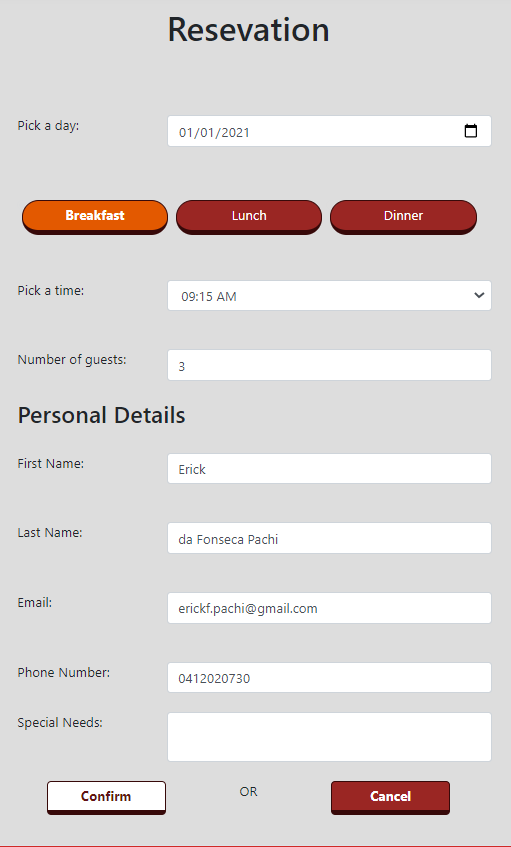

Project Summary: The goal of this project was to create a website that would enable a fictional restaurant called BeanScean to receive booking requests, which would be managed by staffs.
Requirements:
- Create a registration/login Sytem.
- Create different Roles with different access level (Manager & Staff).
- Allow customers to make reservations
- If user is logged in, auto fill details inputs.
- Enable registered Users to see their reservation History.
- Allow staffs/Manager to edit reservations.
- Allow staffs/Manager to assign tables to a specific reservation.
- Implement table's logic (So the same table cannot be booked twice at the same time).
- Allow Manager to assign Roles to users
- Allow Manager to Edit the start and End time of each period.
Registration
It enables users to create an account.
Login
It enables users to login with their registered accounts.
Account Details
Users can see and edit their personal details.
Account History
Users can see all the reservations associated with their accounts.
Assign Role
This page is only accessible by managers. And it is where they can assign roles to other users.
Staff List
This page is where managers can see all users that have a role.
Manager Page
In this page managers can see a report with a Summary of all reservations. And it also enables managers to access other pages.
Edit Sittings
This page is where managers can Change the Start and End time of each period.
Reservation List(Manager)
Users with a Manager Role are able to see, edit and delete Reservations.
Reservation List(Staff)
Staff also are able to see and edit reservations. But unlike managers, staffs are not able to delete them. And they also do not have access to the manager page.
Reservation

In the reservation page, the user is able to choose the number of guests, day, period and start time. Some basic details will also be required, such as: name, email and phone number (However, it is auto filled if the user is registered).
Edit Reservation
This page is where Manager/Staffs can add or remove tables as well as change the booking details (such as status).
choose Area
Each reservation can be assigned to one area. Therefore, after picking an area all the Tables from that specific area are displayed.
Add Table
All the tables assigned to a reservation are displayed on top.
The code also checks all the reservations booked during the same time, NOT allowing the same table to be booked twice for the same time.